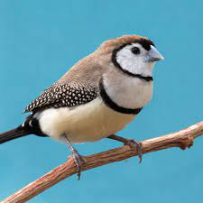
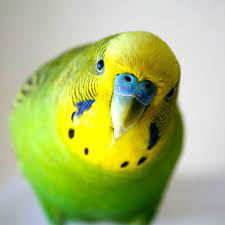
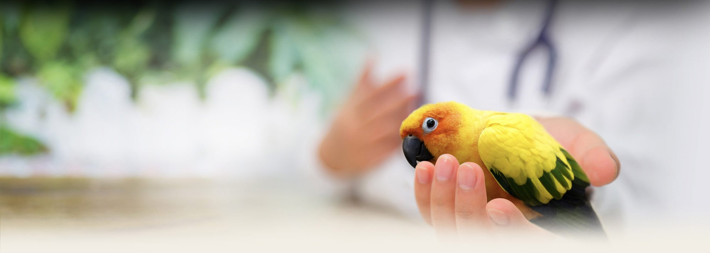
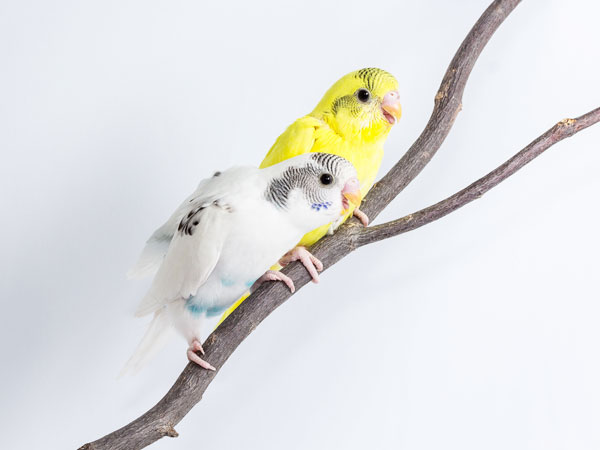
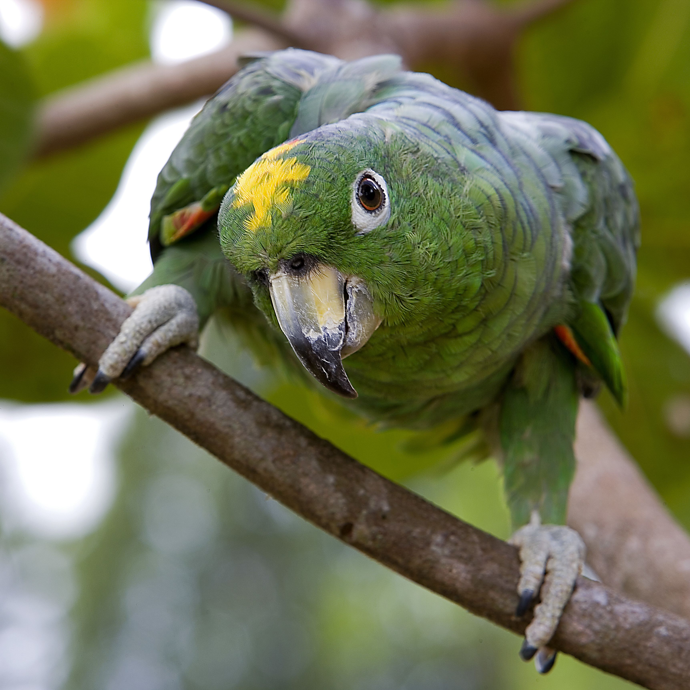

You’ve discussed it with your family, the timing is right, and the decision is made. You want to introduce a feathered companion to your life. But how do you know which bird is right for you and your family? Read on for important considerations in your search for the perfect pet bird.
As with any new pet, you need to ask yourself if you have the time and finances available to adequately care for a pet bird. Far from keeping them in a small cage and feeding them cheap bird seed, birds require a considerable investment to cover their toys, indoor and outdoor safe spaces, medical care and nutrition. Birds require regular parasite preventatives as well as regular veterinary care in order to stay fit and healthy. Many birds require a significant time investment as well, with many parrot species being incredibly curious and intelligent and demanding a sizable portion of your time.
No bird should be kept solely in a small cage indoors. All birds need to be able to stretch their wings and fly to keep fit and healthy, with the combination of a large outdoor aviary and safe indoor time a good start. Smaller cages can be used for short periods of time, much like crates are used for dogs, but should not be their only environment.
Almost all birds enjoy the company of their own kind. However, if you were to get a solitary bird, such as a Cockatoo or Cockatiel, keep in mind that you will have to replace its family. If you spend long periods of time outside the home and your bird is alone, they will likely get lonely, bored and frustrated. This can lead to your bird developing medical and behavioural problems. If you aren’t home very often, it’s best to get two birds who can keep each other company.
Some birds are messier than others. Parrots, for example, would normally spend hours every day in the wild chewing seeds and fruits. As pets, this need to chew doesn’t go away. It’s important to provide all birds access to toys, but parrots particularly require safe objects to chew and explore every day. This invariably creates a lot of mess. Droppings in the bottom of cages need to be cleaned up regularly too, to avoid your bird becoming sick.
Even though they are smaller than cats and dogs, birds require veterinary attention and check-ups just like any other pet. Develop a good relationship with an avian veterinarian or veterinarian with a special interest in birds. Your veterinarian can give you advice on all aspects of caring for birds: from choosing the right bird for your family, through to nutrition, housing, preventative care and behavioural advice.
If you are thinking of becoming a bird owner for the first time, note that some breeds are easier to care for than others. Choosing a bird that is smaller, lower maintenance and friendlier can help your first experience be a positive one and ensure you develop a positive long-term relationship with your new pet.
Smaller pet birds best suit those who have limited space, such as those in small homes or apartments. Whilst these birds still need ample room to move around, they can be kept in smaller cages. They are also easier to handle, making them best for inexperienced bird owners or families with children.
Larger birds are best for more experienced bird owners. They can have very long lifespans so are a long-term commitment. They are also generally more expensive, louder and messier.
Whilst they will still make noise sometimes, these breeds are generally a lot quieter than others. This makes them best for beginners (who aren’t used to noisy pets) and people who live very close to their neighbours.
All pet birds will naturally make noise. However, some are considerably worse than others. It is in their nature to make noise more often and be louder. If you prefer a quieter pet or are new to owning birds, it is best to avoid these!
Birds that can talk are a very popular choice of pet. Birds learn to mimic human speech in an attempt to socialise and bond with their owners. Teaching your bird to talk is a great trick to impress people. The following breeds can be taught to talk. However, they require a lot of training and attention – don’t just expect them to know what to say! Patience and consistency are essential. Begin with easy and short words.
Some breeds of bird are more likely to be friendly and cuddly pets. Affectionate birds are easier to handle and more likely to bond with you. This can make being a bird owner a more enjoyable and fulfilling experience.